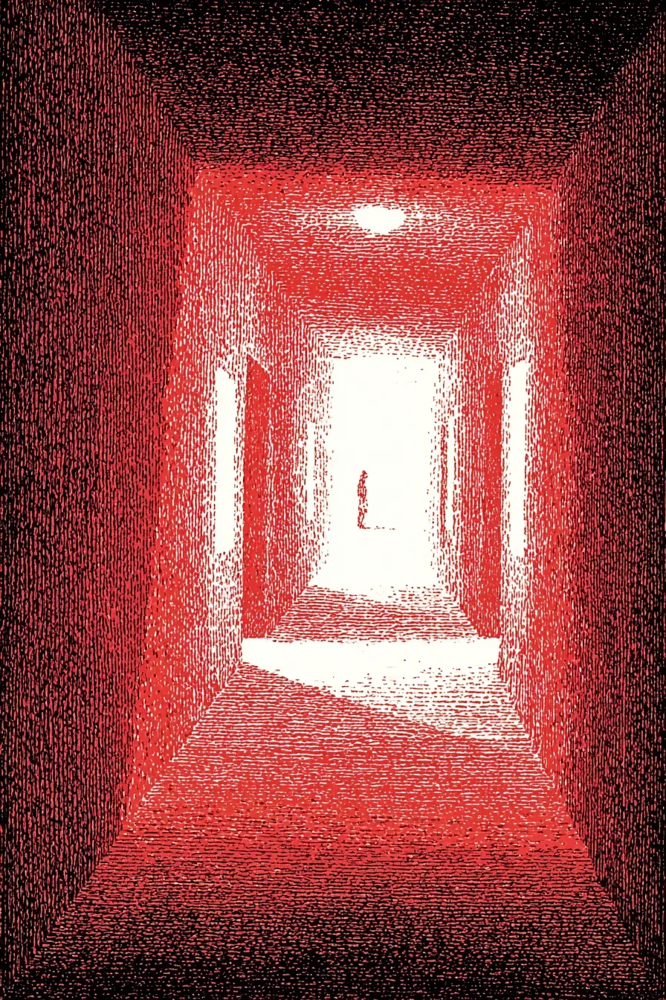

바늘처럼 가느다란 가시가 그녀의 맨발 장심에 파고들었다. 제시카는 비명을 삼켰다. 고통은 아득한 신호처럼 느껴졌고, 바로 뒤를 쫓는 전율적인 공포에 이미 집어삼켜진 뒤였다. 등 뒤에서 들려오는 저 소리 때문에 멈출 수가 없었다.
[A splinter, thin as a needle, drove into the soft arch of her bare foot. Jessica smothered a cry, the pain a distant signal, already swallowed by the all-consuming terror at her heels. She couldn’t stop, not with that sound behind her. ]
그것은 발소리가 아니었다. 발소리였다면 적어도 인간의 것이었을 터. 이것은 메마르고 기계적인 소리였다. 탁… 치익. 탁… 치익. 끔찍한 인내심이 느껴지는, 먼지와 말 없는 원한이 깃든 곳에서부터 무언가 몸을 끌고 오는 소리였다.
[It was not the sound of footsteps, which would have at least been human. This was a dry, methodical beat. Tap… scrape. Tap… scrape. The sound of a terrible patience, of something dragging itself from a place of dust and silent resentment.]
그녀는 묵직한 오크나무 문에 온몸으로 부딪쳐 응접실 안으로 비틀거리며 들어섰다. 썩은 것과 바싹 마른 종이에서 나는 역겨운 단내가 공기 중에 가득해 목을 메워왔다. 그녀는 거대한 태피스트리 뒤로 몸을 숨겼다. 양모의 거친 감촉이 뺨에 스쳤고, 그 섬유에서는 좀벌레와 잊힌 세월의 냄새가 풍겼다.
[She threw her weight against a heavy oak door and stumbled into a drawing-room. The air, thick with the cloying sweetness of rot and desiccated paper, coated her throat. She slid behind a vast tapestry, the wool rough against her cheek, its fibers smelling of moths and forgotten centuries. ]
굳은 표정의 사냥 무리인 직물에 짜인 형상들이 텅 비고 해진 눈으로 그녀를 지켜보는 듯했다. 이 숨 막히는 정적 속에서 들리는 소리는 오직 그녀 자신의 폐에서 터져 나오는 축축하고 거친 숨소리뿐이었다.
[The woven figures—a hunting party, their faces grim—seemed to watch her with vacant, threadbare eyes. Here, in the suffocating quiet, the only sound was the wet, ragged catch in her own lungs.]
기댈 곳을 필사적으로 찾던 그녀의 정신은 추격에 집중하기를 거부했다. 대신 다른 방, 다른 침묵을 떠올렸다.
[Her mind, clawing for an anchor, refused to focus on the chase. Instead, it offered a different room, a different silence.]
몇 주 전의 기억, 끔찍할 정도로 선명한 기억이었다. 오후의 햇살은 희미한 버터색으로, 어머니의 침대 협탁 위 도자기 새 주위에서 춤추는 먼지들을 비추고 있었다. 완전히 소리를 잃어버린 세상 속에서, 새의 부리는 노래를 부르다 멈춘 듯 벌어져 있었다. 제시카는 손에 든 은수저의 묵직함을 기억했다. 자신의 원망이 그 수저에 몽둥이 같은 무게를 실어주던 그 느낌을.
[A memory from weeks ago, pristine and awful. The afternoon light had been a pale, buttery yellow, illuminating the dust motes dancing around the porcelain songbird on her mother’s bedside table. The bird’s beak was open, frozen mid-trill in a world that had become utterly tuneless. Jessica remembered the specific gravity of the silver spoon in her hand, the way her own resentment gave it the weight of a cudgel. ]
그녀는 냄새를 기억했다. 라벤더나 분 냄새가 아니라, 거의 벌어지지 않는 입술에 몇 번이고 가져다주었던, 톡 쏘는 소독약 냄새 같은 수프의 냄새를. 그녀는 그곳에 앉아 헌신적인 몸짓을 했다. 차갑고 끈질긴 소원이 뱃속에서 독초처럼 자라나는 동안.
[She remembered the scent, not of lavender or powder, but of the sharp, sterile broth she had lifted, again and again, to lips that barely parted. She had sat there, performing the gestures of devotion while a cold, patient wish unfurled in her gut like a poisonous fern.]
탁… 치익.
[Tap… scrape.]
이제 그 소리는 문밖에서, 더 가깝고 더 크게 들려왔다. 있을 수 없는 소리. 어머니의 은장 지팡이 소리였다.
[The sound was outside the door now, closer, louder. An impossible sound. The sound of her mother’s silver-topped cane.]
문틈으로 복도에서 새어 나오는 한 줄기 빛이 보였다. 그림자가 그 빛을 가렸다. 제시카는 틈새에 눈을 바싹 갖다 댔다. 그래, 어머니의 형체였다. 익숙하게 축 처진 어깨, 나이트가운에 싸인 마른 몸.
[A sliver of light from the hallway was visible through a crack in the door. A shadow blotted it out. Jessica pressed her eye to the opening. It was her mother’s form, yes, the familiar slump of the shoulders, the thin frame wrapped in a nightgown.]
하지만 그것은 소름 끼치도록 부자연스러운 유연함, 그녀가 남겨두고 온 병상의 여인과는 전혀 다른 포식자의 우아함으로 움직였다. 그 형체는 미끄러지듯 지나갔고, 은 머리를 한 뱀 같은 지팡이는 균형을 잡기 위해서가 아니라 사냥을 위해 바닥을 내리찍었다.
[But it moved with a horrifying, unnatural fluidity, a predatory grace that defied the bedridden woman she had left behind. The figure glided past, and the cane, a silver-headed serpent, struck the floor with a purpose that was not for balance, but for a hunt.]
제시카는 움직이지 않았다. 그녀가 얼어붙은 것은 어머니의 껍데기를 쓴 저것에 대한 공포 때문이 아니라, 갑자기 견딜 수 없이 명료해진 자신의 정신 때문이었다. 이 도주, 썩어가는 저택, 어머니의 얼굴을 한 괴물, 이 모든 것은 진실보다 차라리 다정한 현실이었다. 공포의 실체는 어머니가 자신을 찾아왔다는 사실이 아니었다.
[Jessica didn’t move. She was frozen not by fear of the thing wearing her mother’s skin, but by the sudden, unbearable clarity of her own mind. The flight, the decaying manor, the monster with her mother’s face—it was a kinder reality than the truth. The horror was not that her mother had come for her.]
진정한 공포는, 그녀가 그것을 바랐다는 것이었다.
[The horror was that she had wished for it.]
복도 저편에서 기계적인 소리가 끈질기게 다가오고 있었다. 하지만 새로운 소리가 들려왔다. 복도에서가 아니라, 숨 막히는 정적 같은 그녀 자신의 기억 속에서였다. 가냘프고 혼란스러운 목소리. 그것은 망령의 비명이 아니었다. 그녀 내면의 유령이 던지는 질문이었다.
[Down the hall, the methodical tapping continued its patient advance. But a new sound arose, not from the hall, but from the crushing stillness of her own memory. A voice, reedy and confused. It was not a shriek from the spirit. It was a question from a ghost inside her.]
“제시카?”
[”Jessica?”]